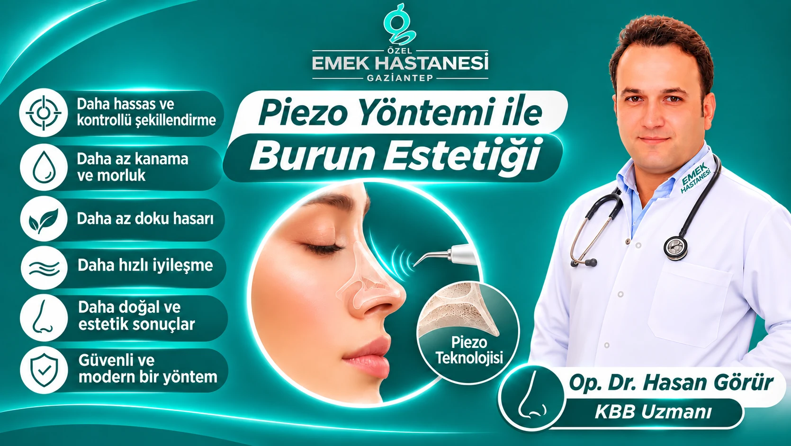

Burun estetiği, yalnızca yüzün görünümünü değiştirmeyi değil, aynı zamanda kişinin yüz hatlarıyla uyumlu, doğal ve dengeli bir görünüm elde etmesini amaçlayan cerrahi uygulamalardan biridir. Günümüzde gelişen tıp teknolojileri sayesinde burun estetiği operasyonlarında kullanılan teknikler de önemli ölçüde çeşitlenmiştir. Bu gelişmeler arasında öne çıkan yöntemlerden biri ise Piezo teknolojisi ile burun estetiğidir.
Ultrasonik rinoplasti olarak da bilinen Piezo yöntemi, burun kemiklerinin şekillendirilmesinde ses dalgalarının oluşturduğu yüksek frekanslı titreşimlerden yararlanır. Geleneksel kemik şekillendirme yöntemlerinden farklı olarak, cerraha daha kontrollü ve hassas çalışma imkânı sunmayı hedefler.
Piezo Burun Estetiği Nedir?
Piezo burun estetiği, ultrasonik titreşimlerle çalışan özel cerrahi cihazlar kullanılarak burun kemiklerinin şekillendirildiği modern bir rinoplasti tekniğidir.
Bu yöntemde kullanılan cihaz, kemik dokusu üzerinde kontrollü kesme ve şekillendirme işlemleri gerçekleştirebilir. Özellikle burun sırtındaki kemik çıkıntılarının düzeltilmesi, burun kemerinin şekillendirilmesi ve kemik yapısındaki asimetrilerin giderilmesi gibi işlemlerde kullanılabilir.
Piezo teknolojisinin en önemli özelliklerinden biri, kemik dokusuna yönelik hassas çalışma sağlarken çevredeki yumuşak dokuların korunmasına yardımcı olacak şekilde tasarlanmış olmasıdır.
Böylece cerrah, burun kemikleri üzerinde daha kontrollü müdahalelerde bulunabilir.
Piezo Yönteminin Öne Çıkan Avantajları
Piezo teknolojisi, burun estetiğinde cerrahi hassasiyeti artırmayı amaçlayan bir yaklaşım sunar. Hastanın burun yapısına ve gerçekleştirilecek işlemin kapsamına bağlı olarak çeşitli avantajlar sağlayabilir.
Daha Hassas ve Kontrollü Kemik Şekillendirme
Piezo cihazları, ultrasonik titreşimler sayesinde kemik dokusu üzerinde milimetrik hassasiyetle çalışılmasına yardımcı olur. Bu özellik, özellikle burun kemerinin düzeltilmesi ve kemik konturlarının yeniden şekillendirilmesi sırasında cerraha kontrol avantajı sağlayabilir.
Kanama ve Morlukların Azalmasına Yardımcı Olabilir
Geleneksel kemik şekillendirme işlemlerinde çevre dokuların etkilenmesi, ameliyat sonrasında şişlik ve morluk oluşumuna katkıda bulunabilir.
Piezo teknolojisinin yumuşak dokular üzerindeki seçici çalışma özelliği, uygun hastalarda ameliyat sonrası doku travmasının ve buna bağlı morlukların azaltılmasına yardımcı olabilir. Ancak bu durum her hastada aynı şekilde gerçekleşmeyebilir.
Çevre Dokuların Korunmasına Destek Olur
Burun estetiğinde yalnızca kemik yapısının değil, çevresindeki kıkırdak, damar ve yumuşak dokuların da korunması önemlidir.
Piezo cihazları, kemik dokusuna yönelik çalışmak üzere tasarlanmıştır. Bu özellik, cerrahi sırasında çevre dokuların gereksiz etkilenmesini azaltmaya yardımcı olabilir.
İyileşme Sürecine Olumlu Katkı Sağlayabilir
Ameliyat sonrasındaki iyileşme süreci; uygulanan cerrahi teknik, hastanın anatomik özellikleri ve vücudun iyileşme kapasitesi gibi birçok faktöre bağlıdır.
Piezo yöntemiyle gerçekleştirilen kemik şekillendirme işlemlerinde doku travmasının sınırlanabilmesi, bazı hastalarda ameliyat sonrası şişlik ve morlukların daha hafif seyretmesine katkıda bulunabilir.
Daha Doğal Görünümlü Sonuçların Hedeflenmesi
Burun estetiğinde başarılı bir sonucun en önemli unsurlarından biri, burnun yüzün genel anatomisiyle uyumlu olmasıdır.
Piezo teknolojisi, kemik yapısının kontrollü biçimde şekillendirilmesine olanak tanıyarak cerrahın doğal burun hatlarını oluşturma hedefini destekleyebilir. Burada asıl belirleyici unsur, hastanın yüz anatomisi ve cerrahın deneyimidir.
Piezo Burun Estetiği Kimler İçin Uygundur?
Piezo yöntemi özellikle burun kemerinde belirginlik bulunan, burun kemiklerinde genişlik veya asimetri olan ve kemik yapısında şekillendirme gerektiren kişilerde değerlendirilebilir.
Bununla birlikte her burun estetiği operasyonunda Piezo kullanılması zorunlu değildir. Burun ucunda şekil bozukluğu, kıkırdak problemleri veya fonksiyonel solunum sorunları bulunan hastalarda farklı cerrahi tekniklerin de uygulanması gerekebilir.
Operasyon öncesinde hastanın burun anatomisi, solunum fonksiyonları, beklentileri ve genel sağlık durumu değerlendirilerek en uygun cerrahi yaklaşım belirlenmelidir.
Piezo Rinoplasti ile Geleneksel Burun Estetiği Arasındaki Fark Nedir?
Geleneksel rinoplastide kemik şekillendirme işlemleri çeşitli mekanik cerrahi aletlerle gerçekleştirilebilir. Piezo rinoplastide ise bu işlem ultrasonik titreşimlerle çalışan özel cihazlar aracılığıyla yapılır.
İki yöntem arasındaki temel farklılık, kemik dokusuna müdahale sırasında kullanılan teknolojidir.
Piezo yönteminin sunduğu kontrollü çalışma imkânı, özellikle kemik yapısının hassas şekilde şekillendirilmesinin gerektiği durumlarda avantaj sağlayabilir. Ancak her iki yöntemin de kendine özgü kullanım alanları vardır. En doğru teknik, hastanın ihtiyaçlarına göre cerrah tarafından belirlenir.
Piezo Burun Estetiği Sonrasında İyileşme Süreci
Piezo rinoplasti sonrasında iyileşme süreci kişiden kişiye değişiklik gösterebilir.
Operasyonun kapsamına bağlı olarak ilk günlerde burun çevresinde şişlik, hassasiyet ve morluk görülebilir. Bu belirtiler zaman içerisinde azalırken burnun yeni şeklini alması daha uzun bir süreç gerektirir.
İyileşme döneminde dikkat edilmesi gereken bazı noktalar şunlardır:
- Cerrahın önerdiği ilaçlar ve bakım talimatları düzenli şekilde uygulanmalıdır.
- İlk dönemde burun bölgesini darbelere karşı korumak önemlidir.
- Doktorun önerdiği süre boyunca ağır fiziksel aktivitelerden kaçınılmalıdır.
- Kontrol muayeneleri aksatılmamalıdır.
- Burnun nihai şeklini alması için gerekli süre beklenmelidir.
Unutulmamalıdır ki Piezo teknolojisi iyileşme sürecini her hastada aynı ölçüde kısaltmaz ve ameliyat sonrasında şişlik oluşmasını tamamen engellemez.
Burun Estetiğinde Teknoloji Kadar Cerrahi Deneyim de Önemlidir
Burun estetiği, teknik donanımın yanı sıra cerrahın anatomik bilgisi, estetik bakış açısı ve cerrahi deneyimini gerektiren özel bir uygulamadır.
Piezo teknolojisi, cerraha kemik şekillendirme aşamasında önemli bir teknik destek sunar. Ancak başarılı bir rinoplasti için burnun yüzle uyumu, solunum fonksiyonlarının korunması ve hastanın beklentilerinin doğru değerlendirilmesi birlikte ele alınmalıdır.
Bu nedenle operasyon öncesinde detaylı muayene yapılması ve kişiye özel bir cerrahi plan oluşturulması büyük önem taşır.
Sıkça Sorulan Sorular
Piezo burun estetiği ağrılı mıdır?
Operasyon anestezi altında gerçekleştirildiği için hasta işlem sırasında ağrı hissetmez. Ameliyat sonrasında ise kişiye göre değişen düzeylerde hassasiyet ve rahatsızlık görülebilir.
Piezo yöntemi ile burun estetiğinde morluk oluşmaz mı?
Morluk oluşumu tamamen engellenemez. Ancak uygun hastalarda Piezo teknolojisinin kontrollü kemik şekillendirme özelliği, ameliyat sonrası morlukların daha sınırlı olmasına katkı sağlayabilir.
Piezo rinoplasti herkese uygulanabilir mi?
Hayır. Cerrahi yöntemin uygunluğu hastanın burun anatomisine, ihtiyaçlarına ve yapılacak işlemin kapsamına göre belirlenir.
Piezo ile yapılan burun estetiğinin sonuçları kalıcı mıdır?
Rinoplasti sonuçları genel olarak uzun süreli olacak şekilde planlanır. Bununla birlikte iyileşme süreci, doku yapısı ve bireysel faktörler nihai sonucu etkileyebilir.
Piezo burun estetiği nefes alma problemlerini de düzeltir mi?
Piezo teknolojisi esas olarak kemik şekillendirme işleminde kullanılır. Solunum problemlerinin giderilmesi için septum, burun içi yapılar ve hava yolları ayrıca değerlendirilerek gerekli cerrahi işlemler planlanmalıdır.
Sonuç: Burun Estetiğinde Hassas Teknoloji, Kişiye Özel Planlama
Piezo yöntemi ile burun estetiği, ultrasonik teknolojinin sunduğu kontrollü kemik şekillendirme imkânıyla modern rinoplasti uygulamaları arasında önemli bir yere sahiptir.
Daha hassas çalışma, çevre dokuların korunmasına yönelik yaklaşım ve kemik yapısının kontrollü biçimde şekillendirilebilmesi bu teknolojinin öne çıkan özellikleridir.
Ancak unutulmamalıdır ki her hastanın burun yapısı ve estetik beklentisi farklıdır. Doğru cerrahi teknik, ayrıntılı muayene ve kişiye özel planlama sonucunda belirlenmelidir.
Özel Emek Hastanesi Gaziantep'te Op. Dr. Hasan Görür (KBB Uzmanı) ile Piezo teknolojisi ve burun estetiği hakkında detaylı bilgi alabilir, burun yapınıza ve ihtiyaçlarınıza uygun tedavi seçeneklerini öğrenmek için uzman değerlendirmesine başvurabilirsiniz.
Sağlıkla ilgili kararlar, kişisel muayene ve hekim değerlendirmesi sonrasında verilmelidir.